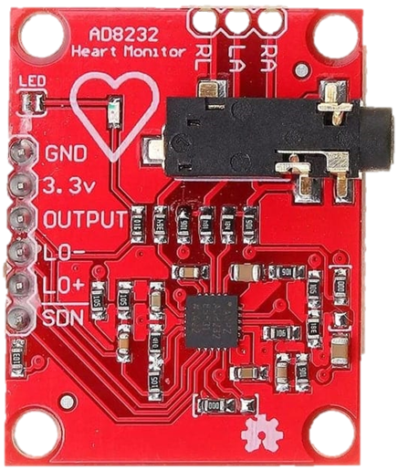

project hardware
This section describes the hardware and components that were used in the project for the acquisition of electrocardiogram signals.
Ad8232 ECG Module

The heart of this module is an integrated circuit AD8232 that integrates in a single circuit the analog front-end and allows to measure the electrical activity of the heart. It is designed to extract, amplify and filter small biopotential signals. in the presence of noisy conditions, as well as those created by motion or electrode placement.
Microcontroler ESP32

The ESP32 module is an all-in-one Wi-Fi/Bluetooth solution, integrated and certified that provides not only the wireless radio, but also a integrated processor with interfaces to connect with various peripherals. In this project it is used to send the ECG signal data to the server by Wi-Fi.
connections

The image above represents the connection diagram between the ESP32 and the AD8232 module that was used in the project.